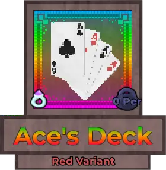
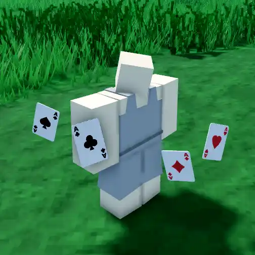
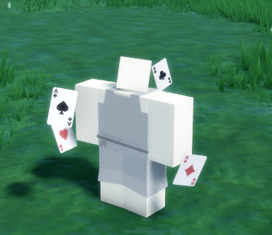
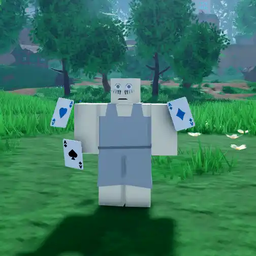
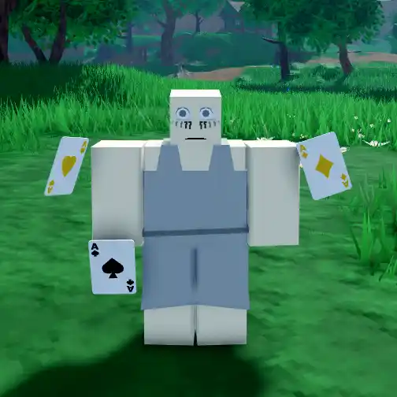
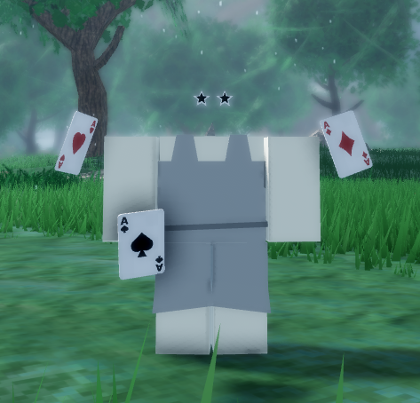

Ace's Deck

Info
Slot: Accessory
Recolorable?: Yes
Unique Colors: None
Particle Effects: None
Sound Effects: None
Owner: Acestar10
Appearance & Effects
In-game description: None
Ace's Deck is a group of floating cards that rotate around the player while spinning around their own centers. They resemble standard playing cards and are all unique cards. Two of the cards have black accents, while the other two are red. The red cards can be recolored.
Inspiration
Ace's Deck was inspired by the owner's real name, which is Ace.

A player wearing Ace's Deck

Ace's Deck from another angle
Image Gallery

Colored Blue

Colored Yellow

Another angle